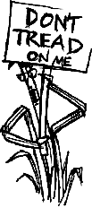

In these ecologically conscious times GDT would like to jump on the band
wagon though keeping in mind some basic tendencies of human nature. As long as
ecology is "in" we'd like to milk it's popularity for all it's worth. It's just our little way
of trying to do our part.
Humans are in general a lazy kind of beast; we like to maintain the lowest
state of energy. The trick is trying to achieve maximum output with minimum effort.
More often than not the desired output is to maintain the lowest state of energy,
and thus we have seen the invention of such things as television. With television
we're allowed to sit and drool for hours and live others lives vicariously. We don't
have to live our lives when TV provides ready made lives (no assembly necessary).
Don't even try to use your imagination. The most exercise you get here is moving
your finger to the channel button, because not only does itleave nothing to the
imagination, it also gives you a short attention span (or the stupid impression that
you are indeed capable of watching four different programs simultaneously). How
better to maintain this lowest energy state than by allowing someone else to do the
work for you§.
Take mowing the lawn for instance. I don't think I could ever seriously care
enough about my lawn to mow it. What's the point it's only going to grow back
again? Besides, all I'd be doing is subjugating the various monocots on my lawn
(maybe grass should form a union. Monocots unite! Our grass goes on strike,
picket our driveway. Then we'd have to call in scabs to cross the lines and cover our
dirt). I think when I finally get my own house I'll just watch the weeds grow up to
the windowsills. I'll wave to my kids on their way to school, and pray to god
(whichever is handy),only halfheartedly (because I am trying to maintain the lowest
state of energy), that they're able to find the house again before it gets dark.
My solution: get some sheep to decimate your lawn. It is the time honored
solution used by the English aristocracy. You have grass. You don't want it. Sheep
eat grass. Problem solved. This way you don't waste any of this country's precious
energy resources and you limit emissions down to those emissions given off by
most living things (sure, methane is a green house gas...but haven't you been
enjoying the radical changes in climate these past few years?). And best of all, you
don't have to do any work. You could hire some voluptuous wench to tend your
flock, or put one of those invisible fence wires around the yard and put collars on
each of your sheep to keep them inside (go to far and ZAP!). As a bonus, when one
of your lawn mowers breaks down just make him into dinner. You could seed
different areas of your lawn with various kinds of grass herbs and weeds, then see
which makes for the tastiest mutton.
Then there's waste disposal; what to do with all of your unused food scraps.
While compost heaps remain a viable means of reusing food scraps, they have to be
turned...and then you have to figure out what you're going to do with all that fertile
soil. All in all, compost heaps are just a bother. There have got to be better methods.
Granted you could try to send your scraps over to all those starving kids in Africa
your mother always mentioned, but it might spoil on the way over, and even
starving kids might not enjoy eating cheese rind and egg shells. To avoid the
spoilage problems you could invite all the kids over to your house, but then you
have air fare problems. Alternatively you could feed it to the one you already have
duck taped to your wall (see Vol. 1, Issue 1). There are however other possible
solutions.
Those dirty Europeans living in mud huts back in the middle ages had the
right idea. Garbage disposals were referred to as pigs and had the side benefit of
being edible (today, only edible underwear have such versatility). They used to
throw their refuse into the street and let pigs run around the townships and devour
it. Granted, Medieval sanitation is usually not something people might want to
aspire to, but it works. If you were to build a pig sty outside of your kitchen, all you
would have to do is throw it out the window. This way the refuse build up is only
§ The next generation of televisions will not only come equipped to receive the fabled 500
channels on the "Information Superhighway" (Just think, it will take you 45 minutes just to surf
through the channels once) but also intravenous feeding tubes and bedpans capable of maintaining
it's viewers for days on end. For more information, write to Plato's Cave (a subsidiary of Hell Inc.)
care of GDT.
|

|